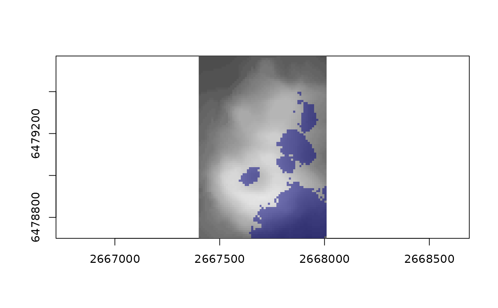

Cast shadows for one sun position, by a single directional sweep over the grid: a
"shadow surface" is carried along the light's direction, dropping by
step * tan(elevation) each cell, and a cell is in shadow where the surface arriving
at it is above the ground. With far, a coarse surrounding grid casts first (with
earth curvature) and its shadow surface comes in over z from distant ridges.
Usage
cast_shade(
z,
extent = NULL,
azimuth,
elevation,
far = NULL,
far_extent = NULL,
convergence = 0
)Arguments
- z
matrix of heights, row 1 at the north edge, square cells; or the result of
gdalraster::read_ds()(a vector with agisattribute), in which caseextentis taken from it- extent
c(xmin, xmax, ymin, ymax)ofz- azimuth
sun azimuth, degrees clockwise from true north
- elevation
sun elevation, degrees above the horizon
- far, far_extent
optional coarser grid surrounding
z(and its extent), for terrain further out; its cells that touchzare skipped- convergence
grid azimuth of true north (meridian convergence, degrees), added to
azimuth; 0 for a grid aligned with true north. In polar stereographic (EPSG:3031, EPSG:3413 style) it is the longitude, or minus it in the north
Examples
z <- volcano[nrow(volcano):1, ncol(volcano):1]
ex <- c(2667400, 2668010, 6478700, 6479570)
s <- cast_shade(z, ex, azimuth = 300, elevation = 15)
mean(s)
#> [1] 0.2095346
if (requireNamespace("ximage", quietly = TRUE)) {
ximage::ximage(z, extent = ex, col = grey.colors(64), asp = 1)
ximage::ximage(s * 1, extent = ex, add = TRUE, col = c(NA, adjustcolor("navy", 0.5)))
}
